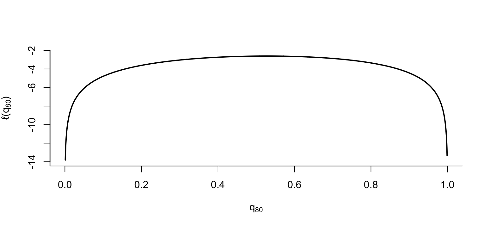
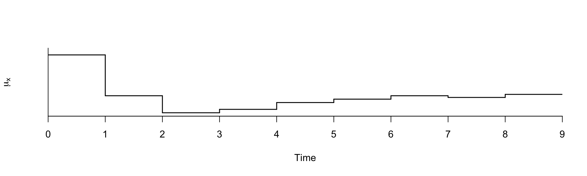
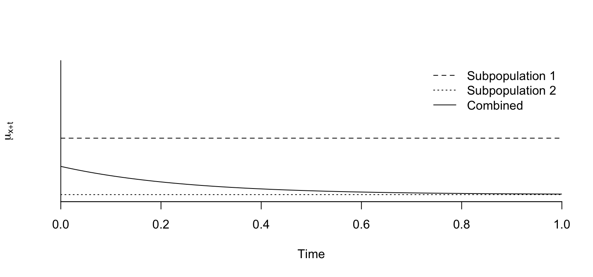

Chapter 13: Life Table Models
10/11/2026
In the last chapter, we
Used uniform distribution of deaths, constant force of mortality and the Balducci assumption to interpolate life table values between tabulated ages.
Compared the resulting survivor curves and their implied forces of mortality.
Generalised the interpolation formulae to other interval lengths and used polynomial approximations to estimate the force of mortality from survivor counts.
The life table is a summary of the distribution of a variable representing the length of a (usually human) life time.
Life tables are produced by estimating the distribution, using observed data on the relevant population.
The link between the data and the distribution is the statistical model for the data.
Now, we introduce some different statistical models which can be used to construct a life table (and to quantify the uncertainty about life table quantities) based on observed data.
We will assume that the life table intervals are whole years (although the results generalise easily).
In its simplest form, the binomial model assumes that we observe individuals through whole years of age, so either the sample is completely closed (no one enters or is censored) or individuals can only enter or leave the sample under observation at an exact age \(x\).
Then the data can be presented as
| \(~\) | |||||
|---|---|---|---|---|---|
| Age | \(\cdots\) | \(x-1\) | \(x\) | \(x+1\) | \(\cdots\) |
| Initial exposed to risk | \(\cdots\) | \(E^0_{x-1}\) | \(E^0_x\) | \(E^0_{x+1}\) | \(\cdots\) |
| Deaths in \([x,x+1)\) | \(\cdots\) | \(D_{x-1}\) | \(D_x\) | \(D_{x+1}\) | \(\cdots\) |
where the initial exposed to risk, \(E^0_x\), at age \(x\) is the number of individuals alive and in our observation sample on their \(x\)-th birthday.
In a completely closed sample \(E^0_{x+1}=E^0_x-D_x\).
The \(D_x\) are observations of independent \(\text{Binomial}(E^0_x,q_x)\) random variables, so
\[ L(q_x)\;=\;{E^0_x\choose D_x}q_x^{D_x}(1-q_x)^{E^0_x-D_x} \]
The log-likelihood is then
\[ \ell(q_x) = \log {E^0_x\choose D_x} +D_x \log q_x + (E^0_x-D_x)\log(1-q_x). \]
Taking first derivative with respect to \(q_x\)
\[ \frac{\mathrm{d}\ell(q_x)}{\mathrm{d}q_x} = \frac{D_x}{q_x} - \frac{E^0_x-D_x}{1-q_x}. \]
Setting equal to \(0\) and solving
\[ 0 = \frac{D_x}{\hat{q}_x} - \frac{E^0_x-D_x}{1-\hat{q}_x} \]
\[ \qquad\Rightarrow\qquad \hat{q}_x=\frac{D_x}{E^0_x} \]
The second derivative of \(\ell(q_x)\) with respect to \(q_x\) is
\[ \frac{\mathrm{d}^2\ell(q_x)}{\mathrm{d}q_x^2} = - \frac{D_x}{q_x^2} - \frac{E^0_x-D_x}{(1-q_x)^2}. \]
The Fisher information is
\[ \begin{aligned} I(q_x) &=\mathbb{E} \left[ - \frac{\mathrm{d}^2\ell(q_x)}{\mathrm{d}q_x^2} \right]\\ &=\frac{\mathbb{E}\left[D_x\right]}{q_x^2} + \frac{E^0_x-\mathbb{E}\left[D_x\right]}{(1-q_x)^2}\\ &=\frac{E^0_x}{q_x} + \frac{E^0_x}{(1-q_x)} = \frac{E^0_x}{q_x(1-q_x)} \end{aligned} \]
Therefore, \[ \text{se}(\hat{q}_x)=\left(\frac{\hat{q}_x(1-\hat{q}_x)}{E^0_x}\right)^{1/2} \]
Although this approach is feasible for a cohort study, where the same sample is followed from birth, it is limited for more general studies (for example where a population is observed for a fixed period of time) where individuals enter and exit at ages other than exact birthdays.
Suppose that we are constructing a period life table, based on deaths observed in the year 2013, and that our data on 80-year olds (\(n=6\) individuals) is as follows
| Life | Date of \(80^{th}\) birthday | Date of death (if died during 2013) | Other information |
|---|---|---|---|
| 1 | 1 June 2012 | 1 March 2013 | |
| 2 | 1 November 2012 | ||
| 3 | 1 January 2013 | ||
| 4 | 1 March 2013 | Lost to follow-up on 1 May 2013 | |
| 5 | 1 March 2013 | 1 September 2013 | |
| 6 | 1 September 2013 |
Note that only individual 3 was observed through the whole of \([80,81)\).
How do we estimate \(q_{80}\)?
In the example in Section 13.1.2, we have each life \(i\) observed over a period \([x+{a_i},x+b_i]\) where \(0\le a_i<b_i\le 1\).
Where observation ends in death, then \(b_i\) is the time at which observation would have ended if death had not happened. Hence we have
| Life | 1 | 2 | 3 | 4 | 5 | 6 |
|---|---|---|---|---|---|---|
| \(a_i\) | 7/12 | 2/12 | 0 | 0 | 0 | 0 |
| \(b_i\) | 1 | 1 | 1 | 2/12 | 10/12 | 4/12 |
| \(y_i\) | 1 | 0 | 0 | 0 | 1 | 0 |
The likelihood for a sample of size \(n\) is
\[ L\;=\;\prod_{i=1}^n {}_{b_i-a_i}q_{x+a_i}^{y_i} (1- {}_{b_i-a_i}q_{x+a_i})^{1-y_i} \]
so here
\[ L\;=\;{}_{0.42}q_{80.58} \cdot {}_{0.83}q_{80} \cdot (1- {}_{0.83}q_{80.17}) \cdot (1- q_{80}) \cdot (1- {}_{0.17}q_{80}) \cdot (1- {}_{0.33}q_{80}) \]
To estimate \(q_x\) we need to re-write the likelihood in Section 13.1.3 in terms of \(q_x\) by using one of the interpolation formula in Chapter 12.
Generally, we have
\[ \begin{aligned} {}_{b-a}q_{x+a}\;=\; 1-{}_{b-a}p_{x+a} &=1-S_T(b-a|x+a)\\[2pt] &=1-\frac{S_T(x+b)}{S_T(x+a)}\\[2pt] &=1-\frac{S_T(b|x)}{S_T(a|x)}\\[2pt] &=1-\frac{{}_bp_x}{{}_ap_x}\\[2pt] &=1-\frac{1-{}_bq_x}{1-{}_aq_x}\\ \end{aligned} \]
Therefore under the assumption of uniform distribution of deaths (UDD; \({}_tq_x=tq_x\)) we have
\[ {}_{b-a}q_{x+a}\;=\;\frac{(b-a)q_x}{1-aq_x}. \]
Under constant force of mortality; i.e. \({}_tq_x=1-(1-q_x)^ t\), we have
\[ {}_{b-a}q_{x+a}\;=\;1-(1-q_x)^ {b-a}. \]
Under Balducci; i.e. \({}_tq_x=1-\frac{1-q_x}{1-(1-t)q_x}\), we have
\[ {}_{b-a}q_{x+a}\;=\;\frac{(b-a)q_x}{1-(1-b)q_x}. \]
All of these can be written as
\[ \begin{aligned} {}_{b-a}q_{x+a} &=(b-a)q_x+O(q_x^2)\\ &\approx(b-a)q_x \end{aligned} \]
if \(q_x\) is small.
Under the uniform distribution of deaths
\[ \begin{aligned} &L(q_x)\;=\;\prod_{i=1}^n \left(\frac{(b_i-a_i)q_x}{1-a_iq_x}\right)^{y_i} \left(1- \frac{(b_i-a_i)q_x}{1-a_iq_x}\right)^{1-y_i}\\ &\Rightarrow\quad \ell(q_x)\;=\;C+\sum_{i=1}^n {y_i}\log q_x +\sum_{i=1}^n (1-{y_i})\log (1-b_iq_x)\\ &\qquad\qquad\qquad\qquad -\sum_{i=1}^n \log ({1-a_iq_x})\\ \end{aligned} \]
For the data in Section 13.1.2,
\[ \begin{aligned} \ell(q_{80}) &=C+2\log q_{80}+2\log (1-q_{80})+\log \left(1-\frac{4}{12}q_{80}\right)\\ &\qquad-\log \left(1-\frac{7}{12}q_{80}\right) \end{aligned} \]
Numerical maximisation is necessary, giving
\[ \hat{q}_{80}=0.528\qquad \text{se}(\hat{q}_{80})=0.253 \]
\[ \begin{aligned} \ell(q_{80}) &=2\log q_{80}+2\log (1-q_{80})+\log \left(1-\frac{4}{12}q_{80}\right)-\log \left(1-\frac{7}{12}q_{80}\right) \end{aligned} \]
Under the approximation
\[ {}_{b-a}q_{x+a}=(b-a)q_x \]
then, denoting by \(Y_i\) the random variable representing death of the \(i\)th individual, we have
\[ \mathbb{E}(Y_i)=\mathbb{P}(Y_i=1)=(b_i-a_i)q_x\quad\Rightarrow\quad \mathbb{E}\left(\sum_{i=1}^n Y_i\right)=q_x\sum_{i=1}^n(b_i-a_i) \]
so a (method-of-moments) estimator of \(q_x\) is
\[ \tilde{q}_x\;=\;\frac{\sum_{i=1}^n y_i}{\sum_{i=1}^n(b_i-a_i)} \;=\;\frac{D_x}{\sum_{i=1}^n(b_i-a_i)} \;=\;\frac{D_x}{E^0_x} \]
where \(E^0_x=\sum_{i=1}^n(b_i-a_i)\) is the initial exposed to risk (in this more general situation).
For small values of \(q_x\)
\[ \text{se}(\tilde{q}_x)\;\approx\;\left(\frac{\hat{q}_x}{E^0_x}\right)^{1/2} \]
so for the data in Sections 13.1.2-13.1.3, we have \(E^0_x=\frac{43}{12}\), so
\[ \tilde{q}_{80}=\frac{2}{43/12}=0.558\qquad \text{se}(\tilde{q}_{80})=0.395 \]
The estimate is close to the MLE (\(0.528\)) but the standard error approximation is not accurate here, as \(q_{80}\) is not small.
The central exposed to risk at age \(x\), \(E^C_x\) is defined as the total time of observation in the age range \([x,x+1)\) of all individuals under study, where observation ends either with death, censoring, or the end of the study period.
\[ E_x^C\;=\;\sum_{i=1}^n (b'_i-a_i) \]
where
\[ b'_i=\left\{\begin{array}{ll} b_i&\mbox{if }y_i=0\mbox{ (death not observed)}\\ t_i&\mbox{if }y_i=1\mbox{ (death observed at age } x+t_i,\; 0\le t_i<1) \end{array}\right. \]
Therefore
\[ E_x^C\;=\;E^0_x-\sum_{i=1}^n y_i(b_i-t_i) \]
As we shall see in Chapter 14, it is usually easier to compute \(E_x^C\) from the available data than it is to compute \(E_x^0\).
Hence it is common to approximate \(E_x^0\) using
\[ E_x^C\;=\;E^0_x-\sum_{i=1}^n y_i(b_i-t_i) \]
and two further assumptions/approximations
The consequence of 1 and 2 is that
\[ E_x^C\;\approx\;E^0_x-\frac{1}{2}D_x. \]
Using this approximation, the estimator in Section 13.1.7 can be expressed as
\[ \tilde{q}_x\;=\;\frac{D_x}{E^0_x}\;=\;\frac{D_x}{E^C_x+\frac{1}{2}D_x} \]
which is sometimes called the actuarial estimator for \(q_x\).
For the data in Section 13.1.2, we have
| Life | 1 | 2 | 3 | 4 | 5 | 6 |
|---|---|---|---|---|---|---|
| \(a_i\) | 7/12 | 2/12 | 0 | 0 | 0 | 0 |
| \(b_i\) | 1 | 1 | 1 | 2/12 | 10/12 | 4/12 |
| \(b'_i\) | 9/12 | 1 | 1 | 2/12 | 6/12 | 4/12 |
| \(y_i\) | 1 | 0 | 0 | 0 | 1 | 0 |
so \(E^C_x=\frac{36}{12}\) and \(\tilde{q}_{80}=\frac{2}{36/12+2/2}=0.5\), such that \(\text{se}(\tilde{q}_{80})=0.354\).
An alternative approach to estimating the life table is to focus estimation on the force of mortality (hazard) \(\mu_x\) rather than the death probabilities (survival function) \(q_x\).
Whereas a binomial model is natural when considering \(q_x\), a two-state model is much more natural for \(\mu_x\).
The two-state model is represented by
and parameterised by the transition intensity (force of mortality) \(\mu_{12}(x)\equiv\mu_x\) from state 1 (alive) to state 2 (dead).
We recall that maximum likelihood estimation of transition intensities in a multi-state model is easy in the time-homogenous case \(\mu_x=\mu\), for all \(x\).
For human lifetime models it is unrealistic to assume \(\mu_x=\mu\), for all \(x>0\), but it may be reasonable to assume, for \(x=0,1,2,\ldots\), that
\[ \mu_{x+t}=\mu_{x+\frac12},\quad t\in[0,1) \]
so the force of mortality is modelled as a step function

The assumption that \(\mu_{x+t}=\mu_{x+\frac12},\; t\in[0,1)\) is usually reasonable for human mortality, because, except in very early life, \(\mu_x\) varies slowly with \(x\).
However, it is also necessary for the population being modelled to be as homogeneous as possible, so ideally separate models should be used for males and females, and for any other variables which are recorded and which may influence mortality (e.g., smokers and non-smokers).
plot(NA_real_, NA_real_, xlim = c(0, 1), ylim = c(0, 2),
xaxs = "i", yaxs = "i", axes = FALSE,
xlab = "Time", ylab = expression(mu[x + t]))
axis(1, at = seq(0, 1, by = 0.2))
box(bty = "l")
abline(h = 0.9, lty = 2)
abline(h = 0.1, lty = 3)
curve(0.4 * exp(-4 * x) + 0.1, from = 0, to = 1, add = TRUE)
legend("topright", c("Subpopulation 1", "Subpopulation 2", "Combined"),
lty = c(2, 3, 1), bty = "n")
Recall from Chapter 9 that the MLE for a transition intensity \(\mu_x\) in a multi-state model is
\[ \begin{aligned} \hat{\mu}_{x+\frac12} &=\frac{\mbox{Observed number of transitions to death state in }[x,x+1)} {\mbox{Total observed holding time in alive state in }[x,x+1)}\\[3pt] &=\frac{D_x}{\sum_{i=1}^n (b'_i-a_i)}\;=\;\frac{D_x}{E^C_x} \end{aligned} \]
with
\[ \text{se}\left(\hat{\mu}_{x+\frac12}\right)=\frac{\hat{\mu}_{x+\frac12}}{D_x^{1/2}} \]
For the data in Section 13.1.2, we have
\[ \hat\mu_{80.5}=\frac{2}{\frac{36}{12}}=0.667\qquad \text{se}(\hat\mu_{80.5})=\frac{0.667}{2^{1/2}}=0.471 \]
The estimator \(\hat{\mu}_{x+\frac12}={D_x}/{E^C_x}\) is called the observed (or crude) central mortality rate and denoted by \(\hat m_x\). Hence
\[ \hat{m}_x\;\;=\;\;\frac{D_x}{E^C_x} \]
Similarly, the estimator
\[ \tilde{q}_x\;=\;\frac{D_x}{E^0_x} \]
is sometimes called the observed initial mortality rate (though this is a bit of a misnomer as this estimates a probability and not a hazard rate).
The crude central mortality rate \(\hat m_x\) is an estimator of the population central mortality rate, defined as
\[ m_x=\frac{\mathbb{E}(D_x)}{E^C_x} \]
the ratio of the expected number of deaths in \([x,x+1)\) to the central exposed to risk, \(E^C_x\). So \(\mathbb{E}(\hat{m}_x)=m_x\).
In a closed population, where exits (except through death) are balanced by entries, we have
\[ \mathbb{E}(D_x)=E^0_xq_x\qquad{\rm and}\qquad E^C_x= L_x = E^0_x \int_0^1 {}_tp_x \,\mathrm{d}t \]
Hence, the population central mortality rate is
\[ m_x=\frac{\mathbb{E}(D_x)}{E^C_x} = \frac{E^0_xq_x}{E^0_x\int_0^1 {}_tp_x \,\mathrm{d}t} = \frac{q_x}{\int_0^1 {}_tp_x \,\mathrm{d}t} \]
This is an alternative definition of \(m_x\) which can be used more generally. Under the assumption of constant force of mortality \(\mu_{x+t}=\mu_{x+\frac{1}{2}}\) over \([x,x+1)\),
\[ m_x=\frac{q_x}{\int_0^1 {}_tp_x\mathrm{d}t} =\frac{1-\exp(-\mu_{x+\frac{1}{2}} )}{\int_0^1 \exp(-t\mu_{x+\frac{1}{2}} ) \mathrm{d}t} =\mu_{x+\frac{1}{2}} \]
which is consistent with the use of the crude central mortality rate being the MLE of \(\mu_{x+\frac{1}{2}}\) under this assumption.
Under the assumption of a constant force of mortality over \([x,x+1)\), we have \(m_x=-\log(1-q_x)\) and hence, we estimate \(q_x\) using
\[ \hat{q}_x\;=\;1-\exp(-\hat m_x)\tag{1} \]
Alternatively, under the assumption of a uniform distribution of deaths over \([x,x+1)\), we have
\[ m_x\;=\;\frac{q_x}{1-\frac{1}{2}q_x} \]
leading to the actuarial estimator
\[ \tilde{q}_x \;=\;\frac{\hat m_x}{1+\frac{1}{2}\hat m_x} \;=\;\frac{\frac{D_x}{E^C_x}}{1+\frac{1}{2}\frac{D_x}{E^C_x}} \;=\;\frac{D_x}{E^C_x+\frac{1}{2}D_x}\tag{2} \]
Typically life tables are computed by obtaining \(\hat m_x\) and then transforming to an estimate of \(q_x\) using \((1)\) or \((2)\) above.
\[ \begin{aligned} \hat{q}_x\;=\;1-p_x &=1-\exp(-\hat m_x)\\ &=1-\left(1-\hat m_x+\frac{1}{2}\hat m_x^2-\frac{1}{6}\hat m_x^3+\ldots\right)\\ &=\hat m_x-\frac{1}{2}\hat m_x^2+O(\hat m_x^3) \end{aligned} \]
and
\[ \begin{aligned} \tilde{q}_x &=\frac{\hat m_x}{1+\frac{1}{2}\hat m_x}\\ &=\hat m_x\left(1-\frac{1}{2}\hat m_x+\frac{1}{4}\hat m_x^2+\ldots\right)\\ &=\hat m_x-\frac{1}{2}\hat m_x^2+O(\hat m_x^3) \end{aligned} \]
So the two estimators of \(q_x\) are typically very close. For the data in Section 13.1.2, we have \(\hat{q}_{80}=0.487\; \tilde{q}_{80}=0.5\)
The Poisson model assumes that the \(D_x\) are observations of independent \(\text{Poisson}(m_x E^C_{x})\) random variables.
Hence,
\[ \begin{aligned} & L(m_x)\;=\;\frac{\exp\left(-m_x E^C_{x}\right)\left(m_x E^C_{x}\right)^{D_x}}{D_x!}\\ &\Rightarrow\quad \ell(m_x)\;=\;C-m_x E^C_{x}+{D_x}\log m_x\\ &\Rightarrow\quad \hat{m}_x\;=\;\frac{D_x}{E^C_{x}} \end{aligned} \]
the same estimator as for the two state model in Section 13.2.5 (with the same standard error).
As models for estimation, the Poisson and two-state models lead to identical inferences.
Generally, the two-state interpretation is preferred because
The two-state model represents the process directly, whereas the Poisson model provides an approximation.
The two-state model is easiest to fit when \(\mu_{x+t}\) is constant for \(t\in[0,1)\). When the force of mortality varies within the interval, the survival function can be estimated using the Kaplan–Meier estimator. In the Poisson model above, the constant-force assumption lets us identify the central mortality rate \(m_x\) with \(\mu_{x+\frac12}\).
Both approaches can accommodate multiple decrements (transitions to absorbing states). The multi-state approach also allows transitions to non-absorbing states.
Generally, the two-state model is preferred because
alive and dead.